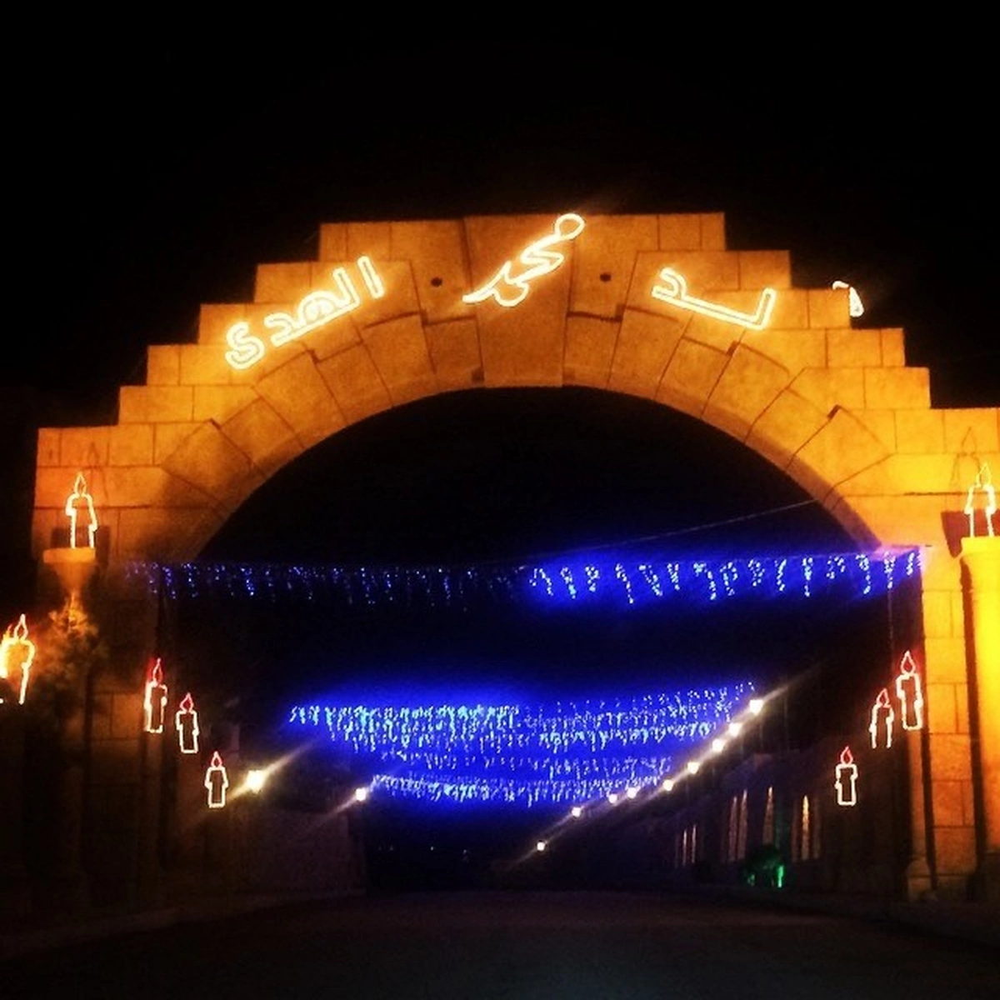

Sports clubs
Football and other sports for young people.
Hospitality, traditions and an active community life.
Like many Bekaa towns, Chmustar is known for its strong family ties and warm welcome. Religious and national occasions bring people together, and the town is decorated with lights for celebrations.
Many people from Chmustar work in public service, medicine, law, education and the arts, in Lebanon and abroad.

The municipality works with local associations on events, volunteering and support.
Football and other sports for young people.
Activities, camps and volunteering for children and teenagers.
Support for families, women and the elderly.
Are you part of an association? Contact us to add it to this page.